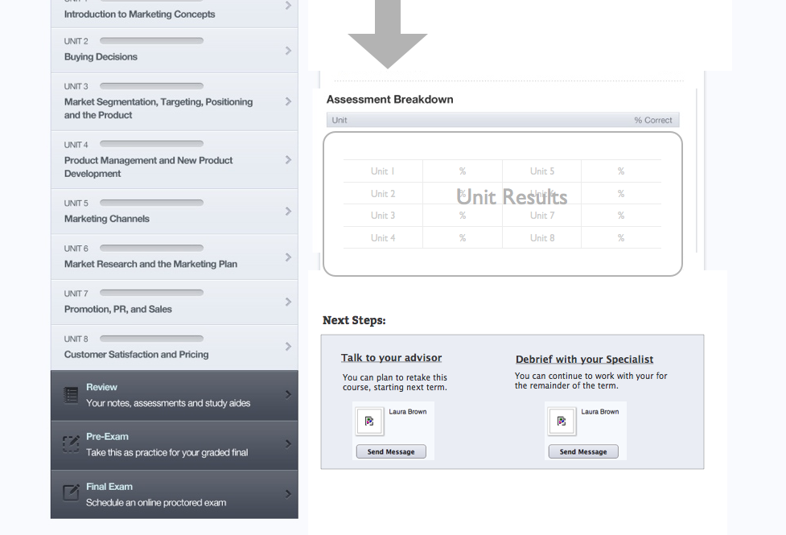

Kit Richert
PORTFOLIO: UNIVERSITY NOW
PROJECT 1
Design the 1st Version of faculty tools
- FACULTY PERSONAS
-
First, we developed an "instructor" Persona
After interviewing New.edu's newly hired instructors, we created a persona "Jennifer". We used Jennifer to identify common goals, needs, and scenarios, which guided our design.
- ARCHITECTURE
-
Then we discussed architecture
This design addressed the need for course instructors to manage multiple courses at once.
- WIREFRAME: FACULTY DASHBOARD
-
We developed wireframes for the course dashboards...
This design was validated by instructors. We also defined an "at-risk" algorithm to flag students.
- WIREFRAME: STUDENT DETAIL
-
And upon click, a more detailed view of an individual student
This page was designed to help faculty to track student progress and communications.
- DEPLOYED: FACULTY DASHBOARD
-
We launched a minimum viable dashboard, and iterated
After launch, we added a tab to show students who were pre-term (starting soon)
- DEPLOYED: STUDENT DETAIL PAGE
-
The student detail pages were also launched
This was the version we deployed (though activity is sparse in this screenshot).
PROJECT 2
Assessment Redesign
- WIREFRAMES: FINAL EXAM RESULTS
-
Wireframe: Exam results page
We needed a state dependant screen that could offer students a breakdown of their score, while offering supportive feedback to passing and not-passing students.
- WIREFRAMES: EXAM NOT-PASS (TOP PAGE)
-
Exam Results: Student does not pass their final exam for the 1st time (top page)
In this case they are a breakdown of their score, and information about re-taking the the exam.
- WIREFRAMES: EXAM NOT-PASS (BOTTOM)
-
Exam Results: Student does not pass their final exam for the 1st time (bottom page)
At the bottom of the page, they are given an easy-click button to request a retake from their instructor, and encouragement to reach out for support.
- WIREFRAMES: EXAM NOT-PASS (BOTTOM)
-
Exam Results: Student does not pass their final exam for the 2nd time (bottom page)
After a second failure, students may not re-take the exam. At the bottom of the page, students are advised about how they may re-take the course in the next term, and are encouraged to reach out with their student advisor for study support.
 - WIREFRAMES: EXAM PASS (TOP)
-
Exam Results: Student passes their final exam
We offer congratulations, and a breakdown of their score. Students are informed that they have earned credit for the course.
- WIREFRAMES: EXAM PASS (BOTTOM)
-
Exam Results: Student passes their final exam
At the bottom of the page, students are encouraged to share their results with their instructor.
- WIREFRAMES: SCHEDULE YOUR FINAL
-
Wireframes: Schedule your final
PROJECT 3
Additional Designs
- THE WEB ENROLLMENT APP
-
The web enrollment app for new.edu
- FINAL PROJECT SUBMISSION
-
Final Project Submission Tools
Students can upload multiple files into a submission. They are reminded to double-check that their submission is complete.
- PROJECT GRADING TOOLS
-
Project grading queue
Graders accept project one at a time, and students are anonymous (they are labeled with in ID number). After they go into grade a project, graders use a clickable rubric. They are required to offer written feedback before a grade can be submitted.
- RANDOM MARKETING PROJECTS
-
Random Marketing Projects
One of my favorite things about working in boot-strapping start-ups is getting to work on all kinds of projects outside of my job description. Here are a few examples from University Now.
I drafted a Quiz